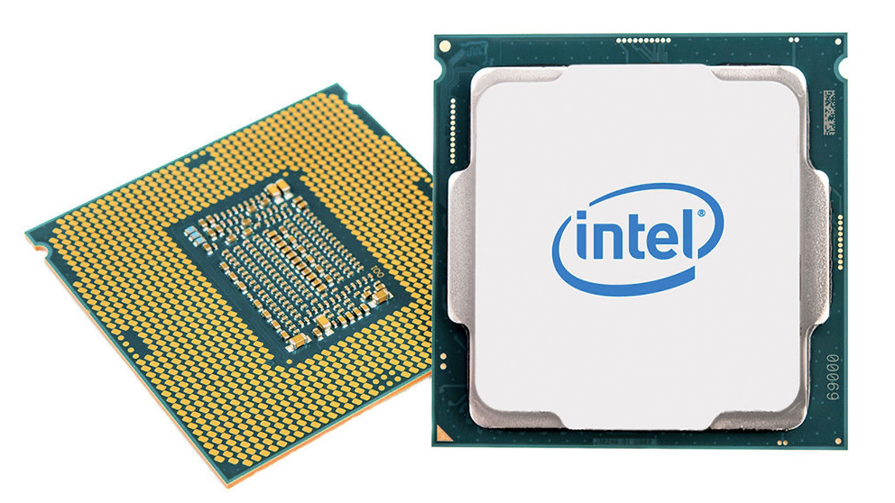
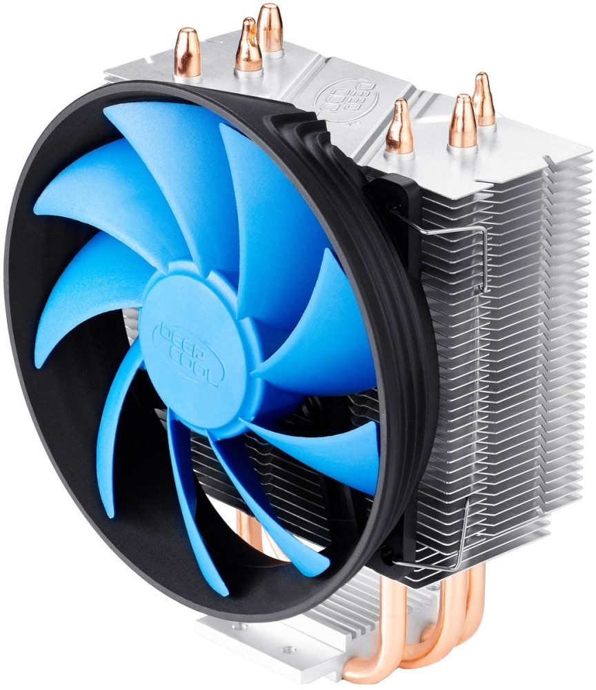
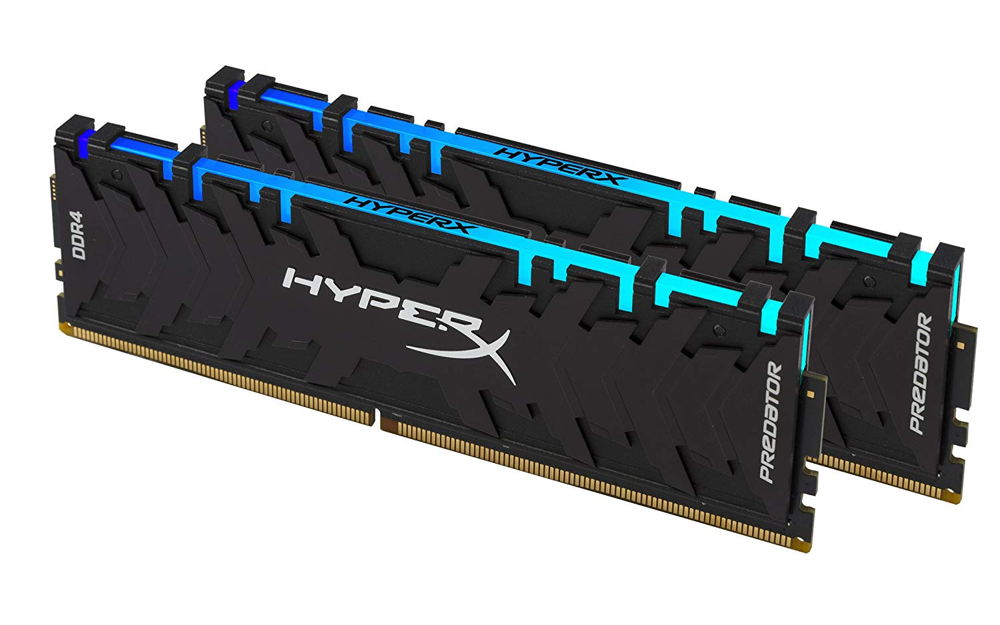
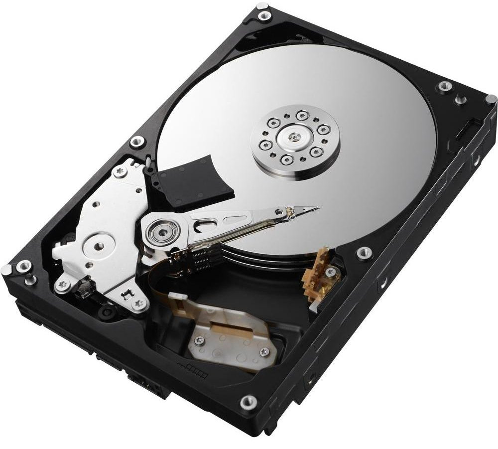
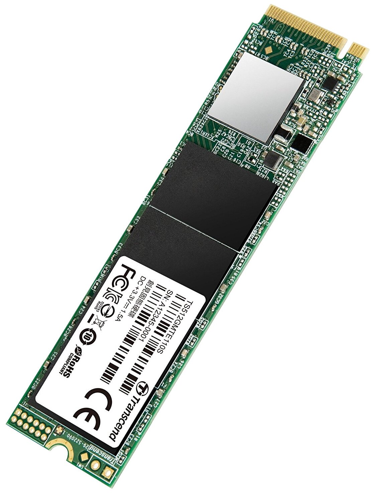
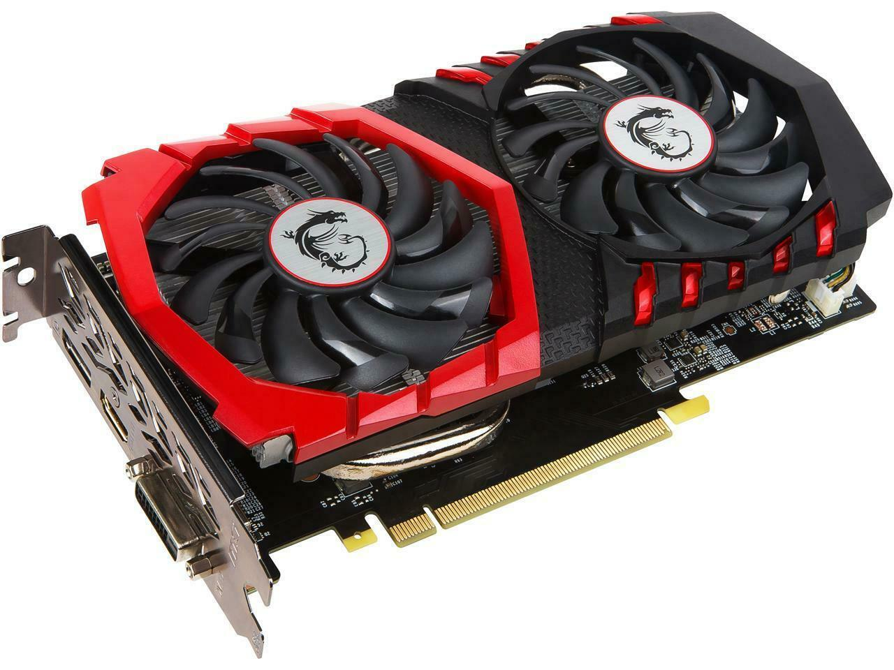
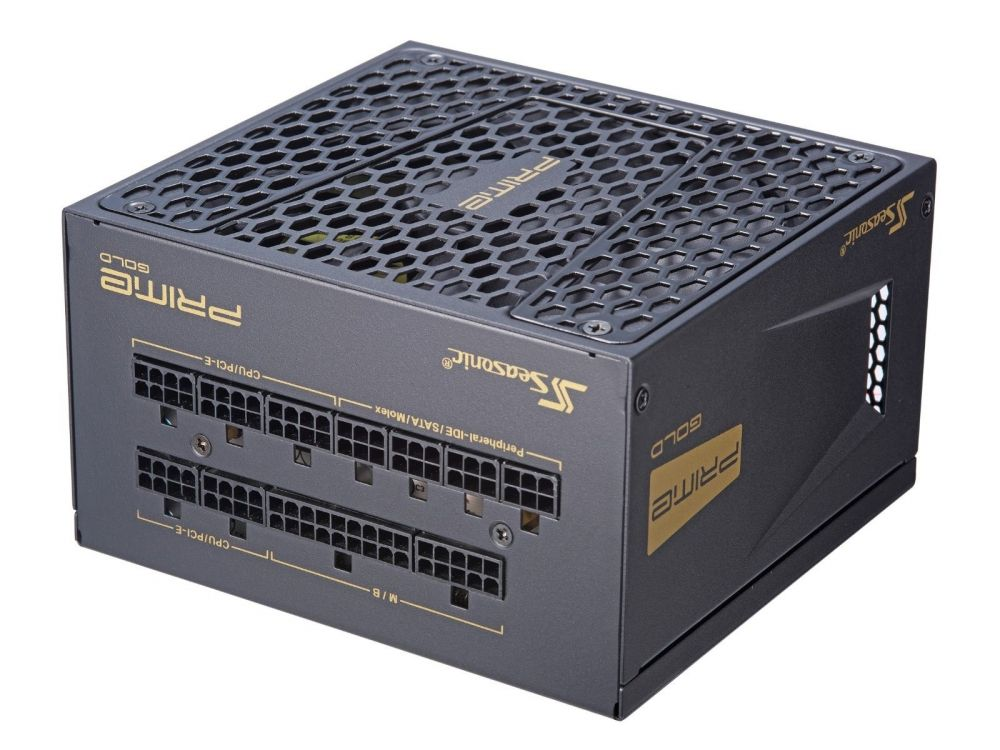
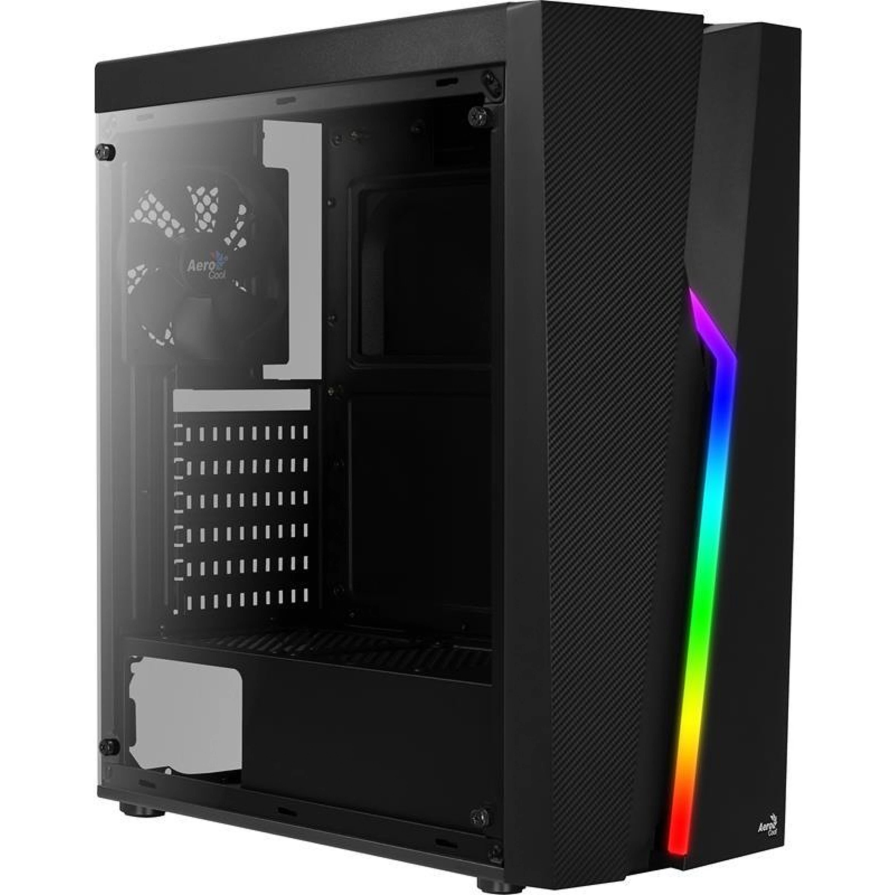

Процессор
Первым в сборке компьютера всегда выбирается процессор, потому что он является главной частью компьютера, от которой зависит производительность во всех программах, будь то рабочие приложения или игры.
Сначала вам нужно определиться, сколько ядер будет иметь ваш процессор. Минимум в 2021 году - это 4 ядра. 6 ядер - это оптимальное количество, их точно хватит для всех задач, даже с запасом. 8 ядер или выше подойдут вам, если вы собираетесь нагружать ПК действительно сложными задачами.
Здесь стоит уточнить, что есть ряд бюджетных процессоров, которые лучше не брать ни при каком раскладе. У Intel это Pentium и Celeron, у AMD - Athlon. Это очень слабые процессоры, которые будут плохо справляться с любыми задачами.
Далее отметим, что если процессор обладает 6 ядрами и ниже, он обязательно должен поддерживать технологии Hyper-threading (Intel) или SMT (AMD). Они позволяют выполнять 2 потока на 1 ядре, что очень сильно помогает процессорам с небольшим количеством ядер.
Теперь об интегрированном графическом ядре. Оно есть в процессорах Intel, у которых в названии нет индекса F, и в процессорах AMD с индексом G. Интегрированное графическое ядро обязательно, если вы хотите собрать ПК без видеокарты, что в наше время является неплохим вариантом сэкономить большую сумму денег. Однако же, если собираете ПК с видеокартой, лучше выбирать процессоры без графического ядра, т.к. они стоят дешевле.
Далее более подробно о версиях процессоров. BOX в названии означает наличие коробки и стандартного маломощного кулера (его кладут не всегда, будьте внимательны). OEM версия предполагает лишь один процессор без коробки и кулера.
Буква K в названии процессоров Intel означает, что процессор чуть-чуть мощнее, и его можно разогнать. F - это отсутствие интегрированной графики. Эти буквы могут быть вместе, т.е. KF в названии. У AMD всё немного по-другому. Более мощные версии обозначаются буквой X (XT), а версии с интегрированной графикой - буквой G. Но и здесь есть нюанс. Ryzen 7 5800X будет сильно лучше, чем Ryzen 7 5700G, и дело тут не в разгоне. В процессорах AMD с интегрированной графикой эта самая графика располагается на месте кэша, что существенно снижает производительность во всех задачах.
Как же теперь, учитывая всё вышесказанное, выбрать процессор? Тут вам помогут тесты (сравнения) процессоров, которых полно на YouTube. Вам надо сравнить FPS процессоров в самых новых играх минимум в 3 разных источниках. Какие-то тесты точно будут неправильными, но после 3-4 (50) тестов выбор для вас будет абсолютно очевиден. Иногда даже самый дешёвый вариант может дать больше FPS, чем те, что подороже.
Кулер
Если вы взяли OEM процессор, вам в любом случае понадобится кулер. Пройдёмся по основным характеристикам.
Обязательно берите кулер с автоматической регулировкой скорости вращения, так он не будет работать на максимальных оборотах, когда это не нужно.
Затем обратите внимание на сокет вашего процессора и его TDP (тепловыделение). Вы должны выбрать кулер, подходящий сокету, и с рассеиваемой мощностью в полтора-два раза выше, чем TDP процессора.
Выбирайте любой понравившийся вам кулер с этими характеристиками, попутно обращая внимание на отзывы.
Материнская плата

На материнской плате располагаются процессор, оперативная память, видеокарта, SSD и дополнительные устройства.
При выборе материнской платы убедитесь, что сокет процессора совпадает с сокетом материнской платы. Далее нужно выбрать чипсет. Если у вас процессор Intel без буквы K, то чипсет нужен с буквами H или B, если же процессор с буквой K, то чипсет нужен с буквой Z, на котором можно делать разгон.
С AMD ситуация другая. Все красные процессоры можно разгонять. Платы для разгона обладают чипсетами B и X. Чипсет X имеет немного отличий от B, поэтому B является самым оптимальным вариантом.
Убедитесь, что материнская плата поддерживает ваш процессор. На официальном сайте материнской платы всегда написано, какие поколения процессоров поддерживаются.
Также важно наличие охлаждения питания процессора, если вы собираетесь его разгонять.
Кроме вышеперечисленных критериев, очень важно просмотреть отзывы. Читайте, как часто попадается брак, и о каких минусах пишут люди. Частые жалобы: плохой BIOS, плохой звук, отсутствие мониторинга, отсутствие слота m.2, отсутствие радиаторов, шум и треск, отсутствие Wi-Fi и другие.
Оперативная память
Перейдём к оперативной памяти. Выбирайте тип памяти, который поддерживается материнской платой. Количество модулей памяти должно быть не меньше 2 для активирования двухканального режима работы (существенно повышает производительность).
Комфортный минимум для 2021 года - это суммарный объём 16 ГБ, но чем больше, тем лучше. Частота тоже важна, но после некоторых значений, а именно 3000-3200 МГц (DDR4) поднятие частоты памяти не увеличивает производительность, поэтому стоит остановить выбор на них.
Тайминги, субтайминги, ранговость - всё это вряд ли пригодится обычному покупателю. Смотрите на отзывы реальных покупателей и выбирайте в соответствии с ними.
Жёсткий диск
Выбирайте жёсткий диск с форм-фактором 3.5, скоростью вращения 7200 об/мин, объёмом кэш-памяти от 64 МБ, объёмом от 1 ТБ. Избегайте черепичных SMR дисков.
SSD
Существуют SSD формата 2.5 и формата m.2. Для подключения m.2 на материнской плате должен быть соответствующий слот. У m.2 как правило скорость чтения/записи выше.
Минимальный рекомендуемый объём накопителя - 240 ГБ.
Предпочтительный тип памяти - TLC 3D NAND, MLC, SLC.
Видеокарта
Выбор видеокарты - это самое простое. Тестов и обзоров со сравнениями FPS очень много. Человек обычно никогда не сомневается в конкретной модели видеокарты. Трудности вызывает только вопрос от какой именно компании её взять.
У каждой компании есть варианты и достойные, и не очень. В плане конструкции, чем больше вентиляторов и чем больше радиатор, тем она будет тише и холоднее. Но если TDP видеокарты меньше 125 Вт, то и одновентиляторная видеокарта должна справляться.
Если карты стоят одинаково, и у них одинаковые плюсы и минусы, то отдавайте предпочтение той, у которой выше частота. Разогнанные с завода видеокарты называют OC.
Помните также, что не имеет значения, как видеокарта выглядит спереди, потому что она всё равно будет смотреть вниз. Поэтому важно, как видеокарта выглядит сбоку, там, где питание.
Блок питания
Для начала узнайте, сколько ваша система потребляет энергии. Для этого зайдите на любой калькулятор мощности и заполните его теми комплектующими, которые вы выбрали. Теперь, когда вы знаете, сколько потребляет ваша система, прибавьте 100 Вт, чтобы не менять блок питания в случае будущих апгрейдов.
Обязательные условия для блока питания следующие. У блока питания должны быть разъёмы для полного питания вашей видеокарты и вашего процессора. Также у блока питания должно быть достаточно разъёмов SATA для питания жёстких дисков и SSD
Корпус
Корпус должен учитывать совместимость, продуваемость и внешний вид. Первое, корпус должен быть совместим с форм-фактором вашей материнской платы. Второе, корпус должен быть совместим с форм-фактором вашего блока питания. Третье, высота вашего кулера должна выть вмещаема в корпус. Если это водянка, то на верхней крышке или спереди должно умещаться то количество вентиляторов, которое есть у водянки. Четвёртое, видеокарта должна быть вмещаема в корпус. И пятое, в корпусе должно быть достаточно слотов для установки жёстких дисков и SSD.
Дальше продуваемость. Есть 3 типа корпуса по продуваемости: меш, не меш, а также корпуса без продуваемости. Меш - это корпуса с перфорацией спереди. Они обеспечивают лучшую продуваемость. Не меш - это корпуса без перфорации спереди, то есть с глухой крышкой, но имеющие продув по бокам. Далее идут корпуса с глухой крышкой, с маленькой продуваемостью сзади или внизу, или вообще без продуваемости, их брать нельзя.
Теперь очень важный момент. В комплекте с корпусом вентиляторы могут идти, а могут не идти. Вентиляторы нужны обязательно, хотя бы 1 сзади и пара спереди. Вы также должны быть уверены, что на вашей материнской плате достаточно интерфейсом SYS_FAN и CHA_FAN или у блока питания достаточно кабелей MOLEX, если нет контроллера для вентиляторов.
Последнее по корпусу - это внешний вид. Боковое окно обязательно (даёт +10 FPS). Есть акриловое стекло, и есть закалённое, оно чуть подороже. Второе, рекомендую брать корпусы с белым интерьером. Он намного лучше отражает всю подсветку и выглядит светлее. И третье, самое важное, корпус должен вам нравиться.